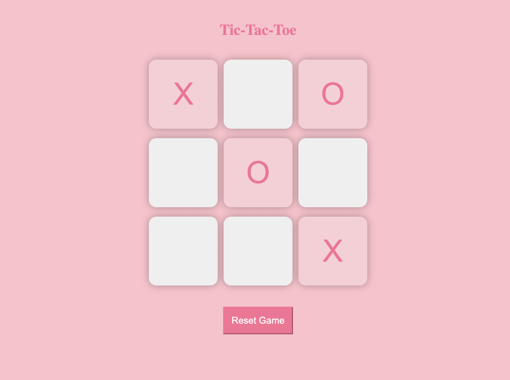
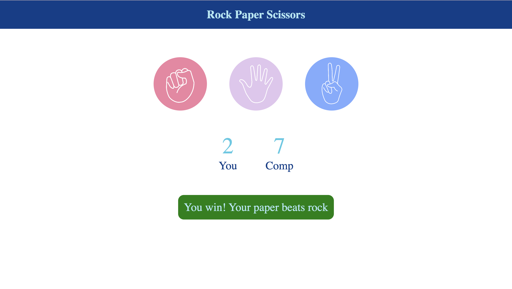
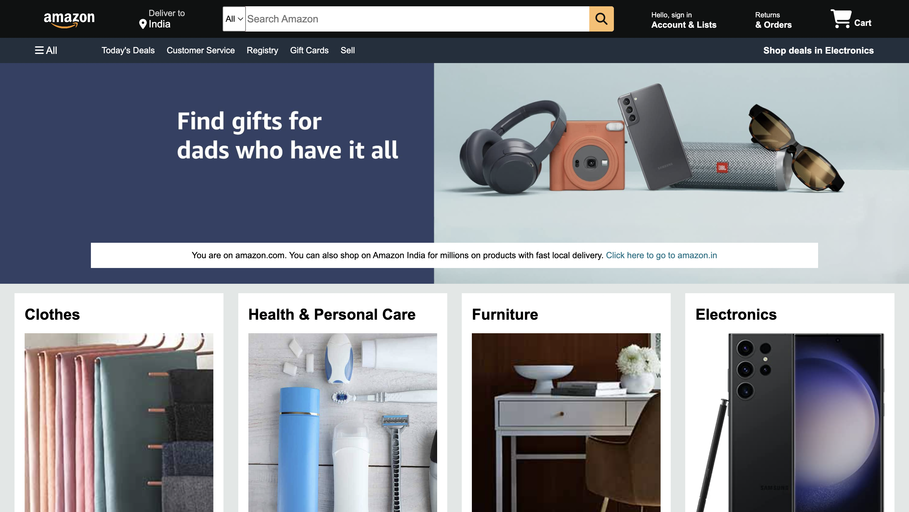
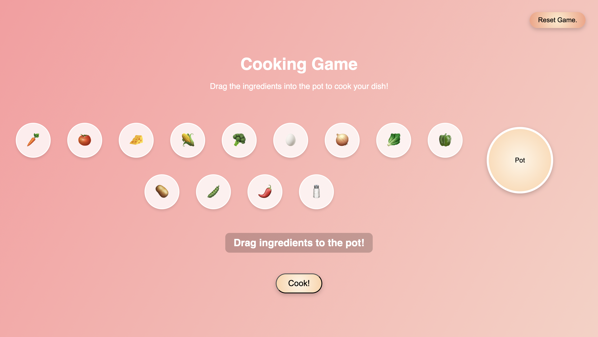

Hey! I'm Anuska, a first year CS undergrad at Scaler School of Technology, who's incredibly passionate about software development.
Outside of academics, I enjoy playing basketball, watching series, singing, dancing and making videos!
A simple and intuitive application that provides real-time weather updates for any location worldwide. Built with a focus on usability and clean design, the app is perfect for anyone needing quick and accurate weather information.
A Tic Tac Toe Web Game for two players where they take turns marking a 3x3 grid with X or O, with the goal of being the first to get three in a row.
A simple and interactive Stone Paper Scissors web game. The game allows users to play against the computer, featuring dynamic visuals, real-time score updates, and intuitive user interface design.
A frontend clone of Amazon's homepage, replicating the layout and design of the original site.
A goofy cooking game.